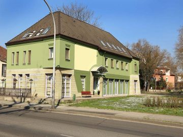

e-mail: posta@osztalykirandulas.hu
telefonszám: +3670/582-7000, +3670/676-1140
| Szálláshely típusa: | Hostel |
| Befogadóképessége: | 40 fő (pótággyal: 34+6 = 40 fő) - akár a megrendelő csoport kizárólagos használatára |
| Szobák: | A Hostel összesen 12 db szobával rendelkezik: 5 db 2 ágyas, 2 db 3 ágyas, 2 db 4 ágyas, 2 db military-szoba (emeletes ágyakkal) és 1 db prémium szoba franciaággyal, kanapéval. Minden szobában tiszta ágynemű, friss törülköző, hajszárító és külön fürdő várja a csoportokat. Mindezeken felül a prémium szobában hűtő is található. A szálláshely teljes területén ingyenes WIFI internet elérés biztosított. |
| Étkezés: | A Hostel közösségi helyisége a nap 24 órájában áll a csoportok rendelkezésére. A vendégek a TV-t, illetve a teljesen felszerelt konyhát is díjmentesen használhatják. A konyhában kávé, tea és üdítő várja a vendégeket. Egyéni igényeknek megfelelően napi 3-szori étkezést tud biztosítani a szálláshely. |
| Fűtés: | A szálláshely fűthető (fűtési szezonban 500-1.000 Ft fő/éj felár. Az ár a szálláshelyen tartózkodás idejének a függvénye). |
| Szolgáltatások: | Kamerával megfigyelt lebetonozott parkoló áll a vendégek rendelkezésére Buszok számára ingyenes parkolási lehetőség |
| Nyitvatartás: | Egész évben |
| Érkezés-Távozás: | A szálláshely elfoglalására legkorábban 11 órakor van lehetőség, elhagyni 14 órakor kell. Csomagmegőrzésre a szállás elfoglalásától függetlenül van lehetőség. |